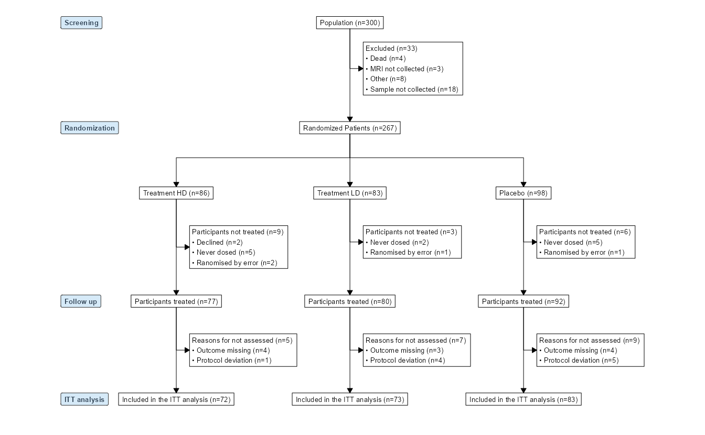

library(tidyverse)
library(consort)
library(selecta)10 患者流程图不必再手动画 | 有更优雅的方式
在临床研究当中，流程图（Flow Diagram）用于展示研究参与者从筛选评估、入组分配、治疗随访到最终分析等各个阶段的流动和排除情况，通常也被称为CONSORT流程图。通过流程图，读者可以清晰地了解患者在各阶段的流动情况，从而判断是否存在组间不均衡、是否引入潜在偏倚，以及最终纳入分析的人群是否合理。
流程图中数字的准确性与一致性非常重要，但也恰恰是绘制过程中最容易出问题的环节。手动绘制可能出现很多棘手的问题：
- 耗时费力，抄录和计算过程一不小心就会出错，造成前后数字对不上；
- 如果原始数据有调整或更新，只能全部重新计算；
- 不容易保证流程图的规范性，可能需要多次修改才能满足期刊要求。
RCT有专业的统计团队，不用担心这些问题。但对于研究者自己的观察性研究，就亟需一个有效的解决方案。
10.1 如何高效地绘制流程图？
流程图应该符合什么样的规范？CONSORT和STROBE指南（分别是RCT和观察性研究的报告规范）都给了明确的建议：
- CONSORT:流程图的具体形式和内容可根据试验的具体特点而有所不同。例如，许多手术或疫苗接种的试验并不包含中止参与的可能性。尽管CONSORT强烈建议使用流程图来说明研究期间的参与者流动情况，但目前尚无统一、规定的格式。1
- STROBE:流程图应包括主要结果，如主要结局的事件数。虽然我们建议使用流程图，特别是对于复杂的观察性研究，但我们不提出流程图的特定格式。2
没有统一的格式，又要满足规范的要求，该如何实现呢？使用专业的R语言包是最有效的解决方案。目前最常用的包是consort，可以很便捷地创建流程图，报告患者的分配情况。另一个有用的包是2026年才正式上线的selecta，它通过依次定义纳入和排除标准、研究组别和终点指标来构建流程图，原生支持CONSORT、STROBE标准。
使用consort包和selecta包绘制流程图完全不用担心格式是否规范的问题，但前提是我们需要准备一份标准的数据集，这也是保证流程图准确性和一致性所必需的。下面的实例列出的数据格式可供参考。
10.2 实例
首先加载必要的包。
本例用到的数据如Table 10.1所示。
| trialno | exclusion | arm3 | subjid_dosed | subjid_notdosed | no_value | itt_analysis |
|---|---|---|---|---|---|---|
| 1086 | NA | Placebo | 1086 | NA | NA | 1086 |
| 1418 | NA | Treatment LD | 1418 | NA | NA | 1418 |
| 1502 | NA | Placebo | 1502 | NA | Protocol deviation | 1502 |
| 1846 | NA | Treatment HD | 1846 | NA | NA | 1846 |
| 1303 | NA | Treatment HD | 1303 | NA | NA | 1303 |
| 1838 | NA | Treatment LD | 1838 | NA | NA | 1838 |
| 1399 | NA | Treatment HD | NA | Declined | NA | NA |
| 1202 | NA | Placebo | 1202 | NA | NA | 1202 |
| 1485 | NA | Placebo | 1485 | NA | NA | 1485 |
| 1355 | NA | Treatment HD | 1355 | NA | Outcome missing | 1355 |
在以上数据中，trailno是患者编号，每个患者唯一。arm3是分组变量，本例中患者随机分为3组。变量exclusion（筛选期排除）、subjid_notdosed（未治疗原因）和no_value（未评估原因）记录患者是否被排除，如被排除则写明原因，如未被排除进入了下一阶段则用NA表示；subjid_dosed和itt_analysis记录患者是否进入下一阶段（或最终阶段），变量中的患者编号代表进入下一阶段，NA则代表已被排除。这些变量与流程图中的各个阶段一一对应，共同描述了患者从筛选到最终分析的过程。
10.2.1 使用consort绘图
使用consort包绘图需要先用set_consort_defaults()设定格式，然后用consort_plot()绘图。运行以下代码可生成如Figure 10.1所示的流程图。
# 设置格式
set_consort_defaults(
arrow_gp = gpar(lwd = 0.5, color = "black"),
txt_gp = gpar(fontfamily = "sans", cex = 0.85, col = "black"),
box_gp = gpar(col = "black", lwd = 0.5, fill = "white"),
label_txt_gp = gpar(fontfamily = "sans", cex = 1, fontface = "bold", col = "#2C3E50"),
label_box_gp = gpar(fill = "#D6EAF8", col = "grey20", lwd = 0.5),
arrow_length = 0.1, # default 0.1
arrow_type = "closed", # or "open"
pad_u = 3,
bullet = "\u2022", # bullet character for side box items, e.g. an en dash or a hyphen.
parse_markup = TRUE # **bold**, *italic*, ^{superscript}, _{subscript}, __underline__) in node labels.
)
# 绘图
p <- consort_plot(
data = df,
orders = list(
c(trialno = "Population"),
c(exclusion = "Excluded"),
c(arm3 = "Randomized Patients"),
c(subjid_notdosed = "Participants not treated"),
c(subjid_dosed = "Participants treated"),
c(no_value = "Reasons for not assessed"),
c(itt_analysis = "Included in the ITT analysis")
),
side_box = c("exclusion", "subjid_notdosed", "no_value"),
allocation = "arm3",
labels = c("1" = "Screening", "2" = "Randomization", "4" = "Follow up", "5" = "ITT analysis")
)
print(p)
10.2.2 使用selecta包绘图
运行以下代码可生成由selecta包绘制的流程图，如Figure 10.2所示。将selecta生成的流程图保存为pdf或png文件，需要使用其自带的flowsave()函数。
# 绘图
flow <- enroll(df, id = "trialno", label = "Patients were assessed for eligibility") |>
phase("Screen") |>
exclude("were excluded", criterion = !is.na(exclusion), reasons = "exclusion") |>
phase("Randomization & Follow up") |>
allocate("arm3", labels = c("Were assigned to HD treatment", "Were assigned to LD treatment", "Were assigned to placebo"), label = "Underwent randomization") |>
exclude(
"Participants were not treated",
criterion = !is.na(subjid_notdosed),
reasons = "subjid_notdosed",
included_label = "Participants were treated"
) |>
exclude("Were not assessed", criterion = !is.na(no_value), reasons = "no_value") |>
phase("Analysis") |>
endpoint("Were included in the ITT analysis")
# 保存为pdf文件
flowsave(
flow,
count_first = TRUE,
file = "figs/selecta.pdf",
cex = 1,
cex_side = 0.85,
cex_phase = 1,
box_fill = "white",
phase_fill = "lightblue",
vpad = 0.6,
margin = 0.25,
font_family = "Helvetica", # "sans", "serif", "mono"
number_format = "us" # "eu", "space", "none"
)
参考文献
1.
Hopewell, S. et al. CONSORT 2025 explanation and elaboration: Updated guideline for reporting randomised trials. BMJ 389, e081124 (2025).
2.
Vandenbroucke, J. P. et al. Strengthening the reporting of observational studies in epidemiology (STROBE): Explanation and elaboration. PLoS Med 4, e297 (2007).